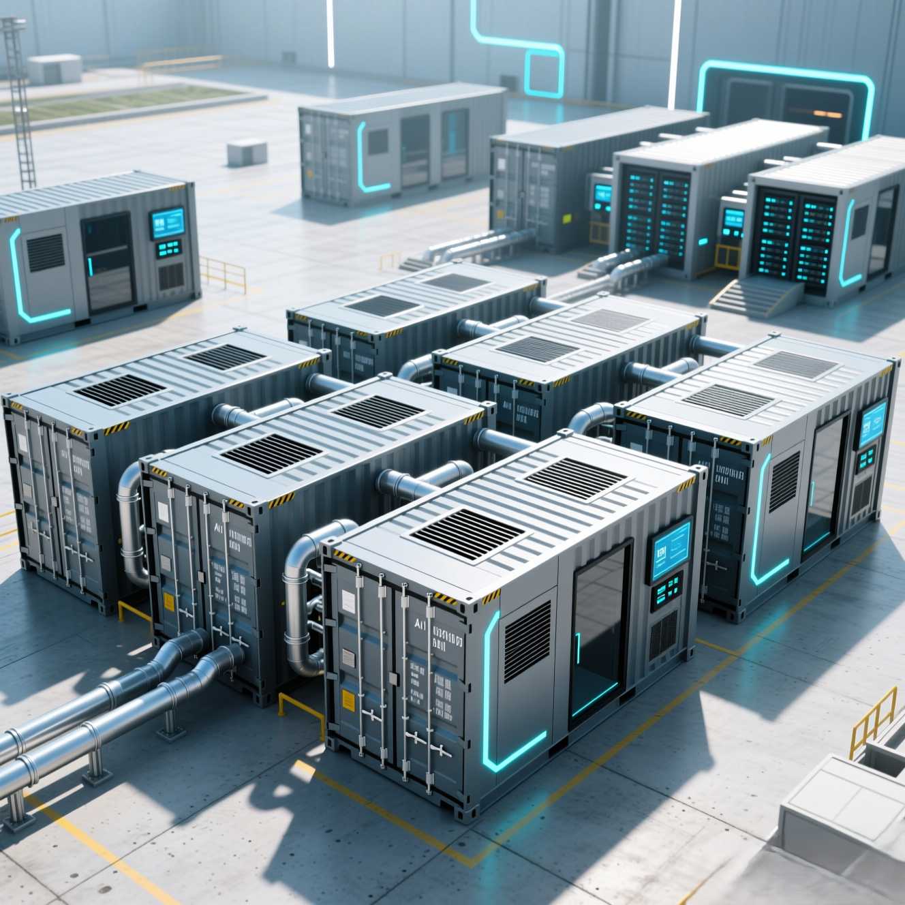

Modular AI Infrastructure, Built for the Way You Actually Scale

The demand for AI compute is outpacing the traditional data center playbook. Site acquisition, permitting, construction, and commissioning on a conventional build can take years — time that AI-driven businesses simply don't have. Our modular system was designed from the ground up to close that gap, giving organizations a faster, more reliable path from decision to deployment without sacrificing quality or breaking budget.
Start Small. Scale to Hyperscale.
Our system works at any scale, and that's not a marketing claim — it's an architectural one. A single containerized AI pod can be deployed to a remote edge location, a campus, or a co-location facility with minimal site preparation. That same container is also the fundamental building block of a full-scale AI data center. As your compute needs grow, additional pods slot in alongside existing infrastructure, scaling capacity in discrete, predictable increments rather than forcing a forklift upgrade or a ground-up rebuild. You don't grow out of our system; you grow with it.
Factory-Built Quality, Delivered to Your Site
Traditional data center construction depends on coordinating trades on-site, managing contractor relationships, and absorbing the inevitable delays that come with field construction. We take a different approach. Our modules are manufactured in a controlled factory environment where quality is repeatable, tolerances are tight, and production schedules aren't subject to weather, labor shortages, or site conditions. While modules are being built, your site prep moves forward in parallel — a slab gets poured, access roads go in, and the site gets ready to receive. When the modules arrive, the heavy lifting is already done. Deployment becomes a matter of placement, connection, and commissioning rather than construction.
We Own the Electrical Work, End to End
One of the most common bottlenecks in any data center deployment is the electrical infrastructure — specifically the medium and high voltage work that sits between the utility and the building. Coordinating that work through a separate contractor introduces scheduling risk, accountability gaps, and the kind of finger-pointing that nobody needs when a project is behind schedule. We eliminate that hand-off entirely. Our team owns the transformer and substation upgrades on site, handling the full electrical scope from the utility interconnect down through the distribution system that feeds your modules. One team, one contract, one point of accountability for the work that matters most.
OEM Partnerships That Secure Your Supply Chain
Critical infrastructure components — power distribution, cooling systems, networking hardware — are only as good as the supply chains behind them. We work directly with OEMs for both the manufacturing of our modules and the procurement of critical components, bypassing the layers of distribution that add cost, lead time, and risk. Those relationships give us preferential access to supply, tighter quality control, and better economics that we pass through to our customers. In a market where lead times on key hardware can stretch to a year or more, that supply chain position is a genuine competitive advantage.
AI-Ready From Day One
Every module ships ready for the workloads driving today's infrastructure investment. Rear-door heat exchangers, direct-to-chip liquid cooling, and immersion cooling are all available configurations, with plumbing, electrical, and network infrastructure pre-staged to reference specs for the latest accelerators. Whether you're deploying NVIDIA, AMD, or any of the emerging silicon options, the infrastructure is designed around the chip's requirements rather than adapted to them after the fact.
The Bottom Line
Speed, quality, and cost have historically been a pick-two proposition in data center construction. Our modular approach changes that equation. By moving production into a factory, owning the full electrical scope on site, and securing supply chain advantages through direct OEM relationships, we deliver high-reliability AI infrastructure faster and at a price that competes with — or beats — a traditional build. Whether you need a single pod in the field next quarter or a phased campus deployment over the next three years, the system scales to meet you.